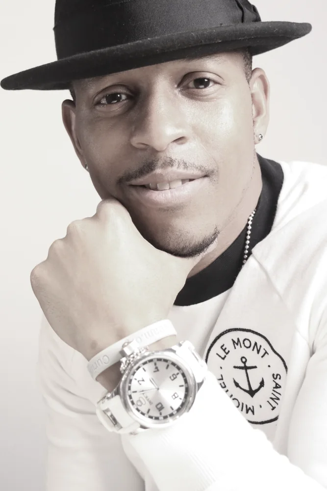

A different point of view / 2wø.Open.Eyes
Neurodivergence has perks for a creative & brand strategist.
I see the world ‘different’. Expansively. I help brands see different too. Why?
Never have I accepted what’s visible as the limit for what’s possible. From building school history and science projects from discarded scraps at home, to learning to play piano by ear at a local Radio Shack, to competing in computer competitions without a home PC, I fundamentally believe that with the right inputs one can always make something out of what may appear to be nothing.
It’s no surprise that I’ve spent my career doing and teaching others to do the same. Whether helping first generation college students matriculate, co-creating brand positionings for government agencies and consultancies, or launching award-winning programs in white spaces for the world’s most iconic companies, I love transforming ideas into tangible value – things you can touch, feel, and absorb – and relish opportunities to do so across every continent on the globe.
Today I use a combination of skills I’ve gained across teaching and corporate America, a curiosity for what makes people tick, and a passion for ideas, creativity, and ‘questioning the default’ to drive new solutions for everyday people. My vehicle of choice? 2wø.Open.Eyes {twoː OH-pun eyez} Brand Studio. I’m always up for exploring how to bring new ideas to life. And when I’m not challenging and creating in the corporate world, you can find me behind a camera lens, piano, or microphone reinterpreting a world anew.
